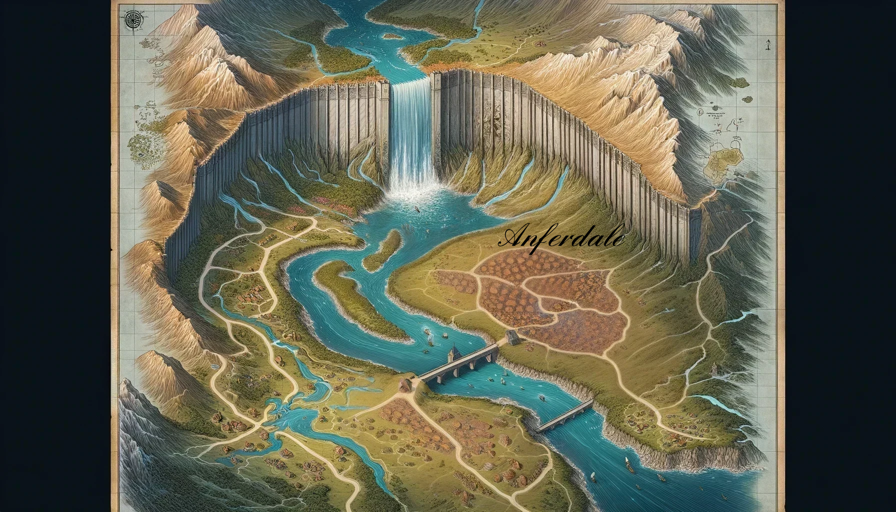

Anferdale General Overview
Anferdale is a quaint, secluded village nestled along the shore of a large, serene lake fed by a nearby waterfall. Though modest in size, Anferdale boasts a picturesque landscape with gently rolling hills, fertile farmlands, and fishing docks where locals cast lines and set nets.
There is an ancient wall that stands to inhuman height and spans the gap between the mountain ranges that run to the ocean on either side of the river. Most of the townsfolk rely on farming and fishing for their livelihoods, making Anferdale feel both self-sufficient and deeply connected to the surrounding natural environment.
The townspeople are largely close-knit, with a few influential families that hold sway in local affairs. Anferdale is governed by a city council and safeguarded by a small but competent town guard.
Most of the families in town or those who live on nearby farms have deep ties to this area. They hear news about the outside world long after the events have come to pass. Those who live in the area have rarely lived elsewhere, and those who move to the area find this an ideal location to settle down and sometimes start a family.
Questions to Help Build a Full Character
Is your character from Anferdale?
- Family and Role: Who are your family members, and what role do they play in Anferdale’s community? Are they farmers, fishers, traders, or artisans?
- Traditions and Festivals: How does your character feel about Anferdale’s traditions, like the Festival of Nottyr?
- Connections with Key Figures: Do you have relationships with any of the town’s key figures, like Harlan Ashhide or someone from the Greenfield or Deepwater families?
- Mysteries and Legends: What’s one local legend or mystery your character is curious or skeptical about?
- Favorite Spot in Town: Where does your character like to spend time in Anferdale?
- Personal Loss or Rivalries: Has your character lost someone to the lake, the illness, or in the Water War of Anferdale?
- Skills and Reputation: What skill or trait is your character known for in town?
- Reason for Wanting to Leave: What drives your character to leave the town?
If they are not from Anferdale, where are they from?
- Reason for Arrival: Why did you come to Anferdale?
- First Impressions: What were your initial thoughts upon arriving?
- Town Connections: Have you made any connections since arriving?
- Outsider Status: How does your character feel about being an outsider in a close-knit community?
- Seeking Something Specific: Is there a particular purpose driving you to Anferdale?
- Personal Code or Beliefs: How does your character’s background clash with or complement Anferdale’s customs?
- Skills That Stand Out: What skill or knowledge does your character possess that sets them apart?